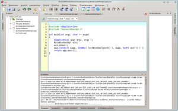
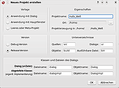

QDevelop
Dieser Artikel wurde für die folgenden Ubuntu-Versionen getestet:
Ubuntu 14.04 Trusty Tahr
Zum Verständnis dieses Artikels sind folgende Seiten hilfreich:
QDevelop  ist eine Entwicklungsumgebung, welche sich in erster Linie auf die Entwicklung von C++ Programmen mit Qt (Version 4.x) konzentriert. QDevelop nutzt neben Qt 4 den freien Compiler GCC, sowie GDB zum Debuggen und Ctags zur Code-Vervollständigung. Zusätzlich ist QDevelop für Linux, MacOS und Windows verfügbar.
ist eine Entwicklungsumgebung, welche sich in erster Linie auf die Entwicklung von C++ Programmen mit Qt (Version 4.x) konzentriert. QDevelop nutzt neben Qt 4 den freien Compiler GCC, sowie GDB zum Debuggen und Ctags zur Code-Vervollständigung. Zusätzlich ist QDevelop für Linux, MacOS und Windows verfügbar.
QDevelop ist eine eigenständige IDE, die nichts mit Qt Creator oder KDevelop  zu tun hat. Es ist zwar nicht so umfangreich wie Qt Creator, dafür aber schnell und nicht mit zu vielen Funktionen überladen.
zu tun hat. Es ist zwar nicht so umfangreich wie Qt Creator, dafür aber schnell und nicht mit zu vielen Funktionen überladen.
|  |
| QDevelop |
Installation¶
Ist das System für das Erstellen von C++ Programmen gerüstet, so muss anschließend das Paket zum Entwickeln von Qt Programmen instaliert werden. Siehe hierzu die Beschreibung im Artikel über Qt. Danach kann man die Entwicklungsumgebung installieren. Diese ist im Paket
qdevelop
 mit apturl
mit apturl
Paketliste zum Kopieren:
sudo apt-get install qdevelop
sudo aptitude install qdevelop
enthalten. Anschließend kann QDevelop über "Anwendungen -> Entwicklung -> QDevelop" gestartet werden.
Weitere Werkzeuge¶
Weitere hilfreiche Anwendungen, die bei Bedarf zusäzlich installiert werden könnn sind der GNU Debugger (GDB):
gdb
mit apturl
Paketliste zum Kopieren:
sudo apt-get install gdb
sudo aptitude install gdb
Sowie die Code-Vervollständigung
exuberant-ctags
mit apturl
Paketliste zum Kopieren:
sudo apt-get install exuberant-ctags
sudo aptitude install exuberant-ctags
Benutzung¶
Bevor mit dem Programmieren begonnen werden kann, sollte überprüft werden, ob die vorher installierten Tools von der Entwicklungsumgebung richtig erkannt wurden und verwendet werden können. Hierzu  im Menü auf "Werkzeuge -> Externe Werkzeuge". Wurde die Installation nach Anleitung vorgenommen, so sollte sich neben jeder Pfadangabe ein grüner Haken befinden. Sollte dies nicht der Fall sein, so muss der Pfad für das jeweilige Tool manuell eingegeben werden.
im Menü auf "Werkzeuge -> Externe Werkzeuge". Wurde die Installation nach Anleitung vorgenommen, so sollte sich neben jeder Pfadangabe ein grüner Haken befinden. Sollte dies nicht der Fall sein, so muss der Pfad für das jeweilige Tool manuell eingegeben werden.
|  |
| Neues Projekt |
Neues Projekt¶
Zur Erstellung eines Programmes muss ein Projekt angelegt werden. Hierzu wählt man im Menü "Projekt -> Neues Projekt". Hierauf öffnet sich ein Dialog, welcher Unterstützung bei der Definition des Projektes bietet. Hier kann man bspw. zwischen einzelnen Vorlagen wählen, sowie die gewünschten Pfad- und Dateinamen anpassen. Ebenso lassen sich, je nach Vorlage, die dazu benötigten Klassen vereinbaren.
Anschließend kann wie von anderen Entwicklungsumgebungen bekannt, mit der Programmierung begonnen werden. Im linken Fensterteil findet man eine Übersicht über alle Dateien und Klassen des Projekts und in der Mitte sind alle gerade geöffneten Dateien über Tabs auswählbar.
GUI¶
QDevelop integriert die Komponenten von Qt sehr gut, so können zum Beispiel die Dateien, die die grafische Benutzeroberfläche definieren (*.ui), durch einen Doppelklick editiert werden. Hierdurch öffnet sich der Qt Designer, in dem eine GUI per Drag-and-Drop erstellt werden kann. Zusätzlich können über das Signals & Slots-System von Qt im Designer den Elementen Funktionen zugewiesen werden.
Hilfe¶
Über F1 oder über den Menüeintrag "? -> Hilfe für momentane Qt-Phrase" wird der Qt Assistant aufgerufen, der eine ausführliche englische Dokumentation zu allen Funktionen liefert. Diese Dokumentation ist eines der wichtigsten Werkzeuge bei der Entwicklung von Programmen. Hierin finden sich zu fast allen Elementen der Programmiersprache ausführliche Beispiele, welche Anfängern den Einstieg in eigene Projekte erheblich erleichtern können. Ebenso sind die einzelnen Klassen sehr ausführlich und ebenfalls mit kleinen Beispielen erklärt.
Links¶
- Erstellt mit Inyoka
-
 2004 – 2017 ubuntuusers.de • Einige Rechte vorbehalten
2004 – 2017 ubuntuusers.de • Einige Rechte vorbehalten
Lizenz • Kontakt • Datenschutz • Impressum • Serverstatus -
Serverhousing gespendet von